Building an Active Directory Home Lab from Scratch
I don't have spare hardware or a budget for lab equipment — just my laptop and VirtualBox. So I decided to build a home lab anyway and document everything I learned along the way. Here's how I set up a Windows Server 2022 Domain Controller, created users and groups, practiced password resets, and configured a shared folder with permissions.
// 01. Getting Windows Server 2022 Running
First thing I did was download the Windows Server 2022 Datacenter Evaluation ISO from Microsoft's site — it's free for 180 days, no credit card needed. I created a virtual machine in Oracle VirtualBox, attached the ISO, and let it install.
When it finished, I was greeted by the Server Manager Dashboard. This is basically the home screen for everything you do on a Windows Server — installing roles, checking events, managing the server. It felt very different from a regular Windows desktop.
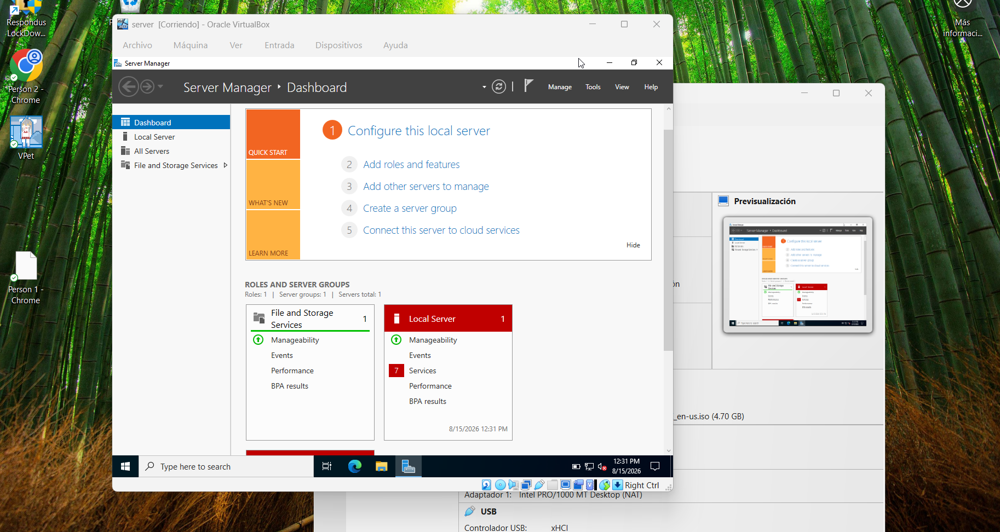
// 02. Renaming the Server and Setting a Static IP
Before doing anything else, I needed to set two things up: a proper server name and a static IP address. The default name Windows gives the server is something random like "WIN-AB3XF2G" — not great. I renamed it to DC01, which stands for Domain Controller 01. That's a naming convention you'll see in a lot of real environments.
The static IP was just as important. If the server's IP keeps changing, DNS breaks and nothing on the network can find it. I set it manually through the Ethernet adapter properties.
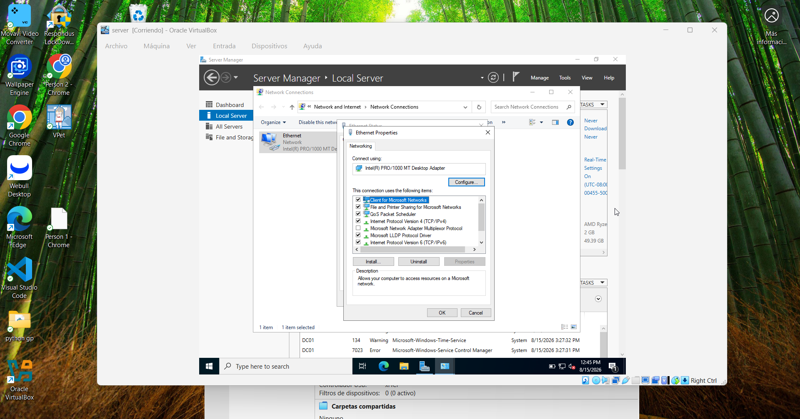
IP Address: 192.168.1.10
Subnet Mask: 255.255.255.0
Default Gateway: 192.168.1.1
Preferred DNS: 127.0.0.1 # Points to itself — the DC will be its own DNS server
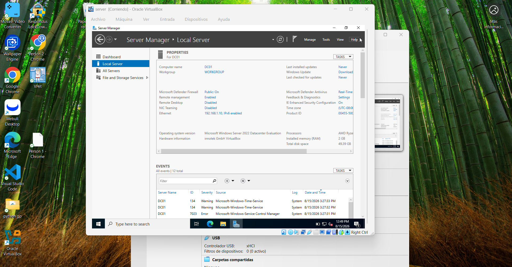
// 03. Installing Active Directory Domain Services
Now for the actual AD installation. From the Server Manager, I clicked Manage → Add Roles and Features and selected Active Directory Domain Services. I also added DNS Server at the same time — AD needs DNS to work, so it makes sense to install them together.
The wizard walked me through everything. One thing that threw me off at first: installing AD DS doesn't actually create a domain yet. That happens in the next step.
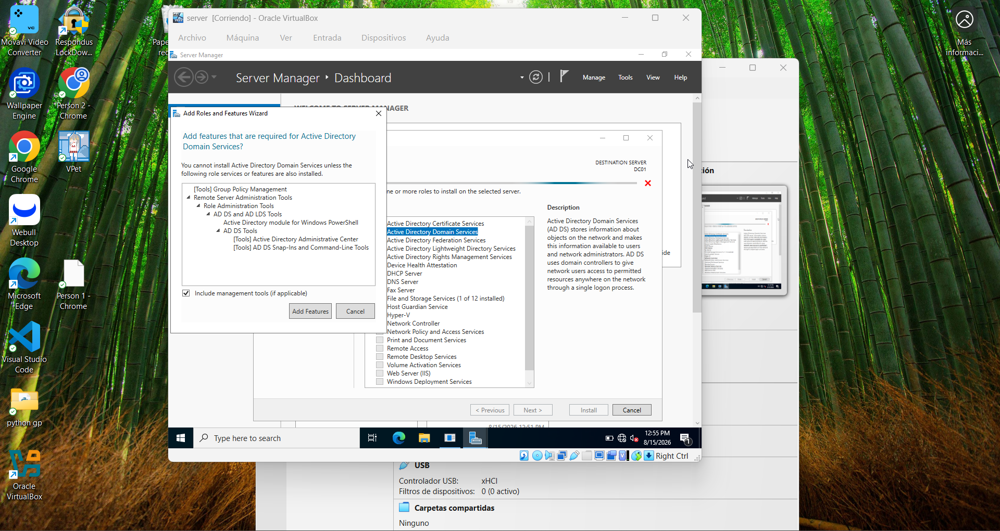
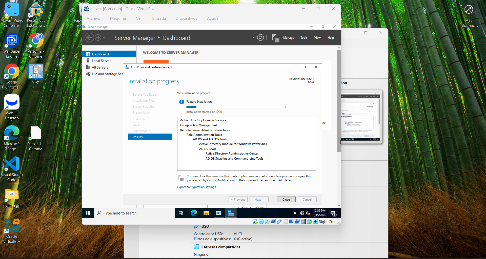
// 04. Promoting the Server to a Domain Controller
After the installation finished, a link appeared that said "Promote this server to a domain controller." This is the step that actually creates the domain. I clicked it and chose to add a new forest, naming the domain corp.local.
There were some yellow warnings during the prerequisites check — I looked them up and they're completely normal for a lab environment, so I moved forward. After clicking Install, the server rebooted on its own. When it came back up, the login screen showed CORP\Administrator — that was the moment I knew it worked.
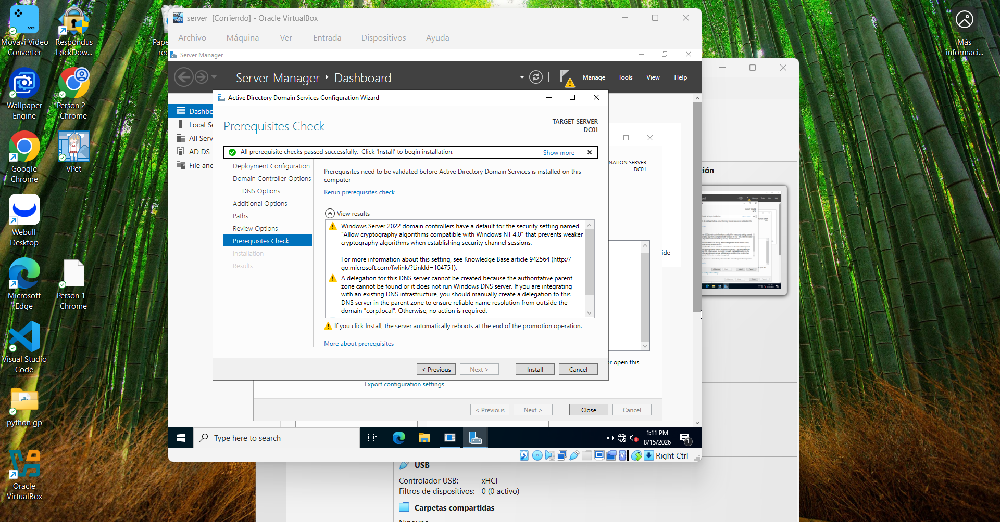
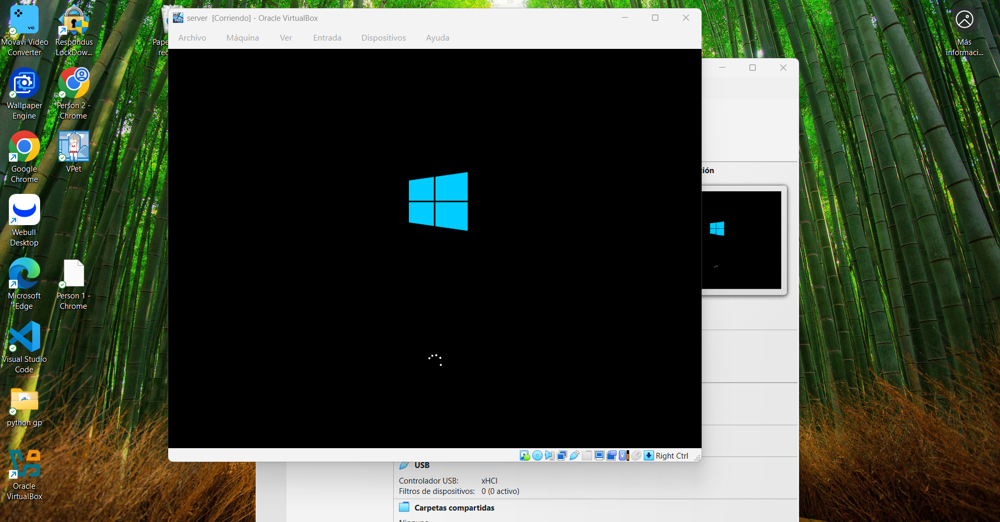
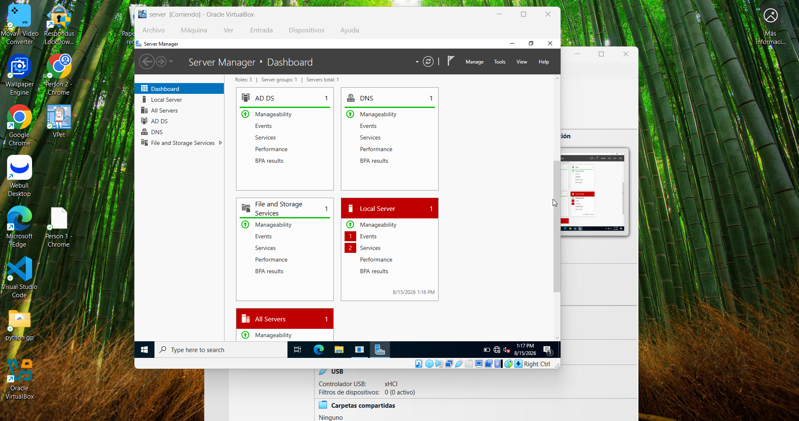
// 05. Creating Organizational Units
With the domain up, I opened Active Directory Users and Computers from the Tools menu. The first thing I did was create Organizational Units — OUs are basically folders inside AD that let you organize users by department. They also let you apply different Group Policies to different groups of people, which is huge in a real environment.
I created three: IT, HR, and Finance. Nothing fancy, but enough to practice the concepts that actually matter.
// 06. Creating User Accounts
Next up: creating users. This is one of the first things you do when a new employee joins a company — you create their AD account so they can log in to their computer and access resources on the network. I created one user per department and placed them inside the right OU.
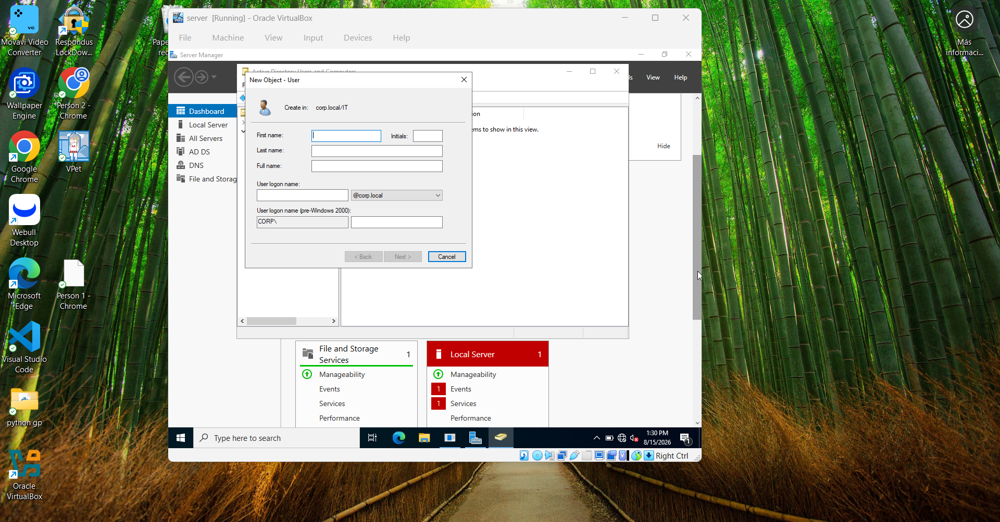
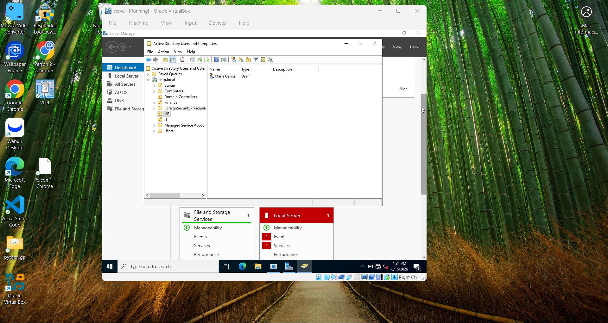
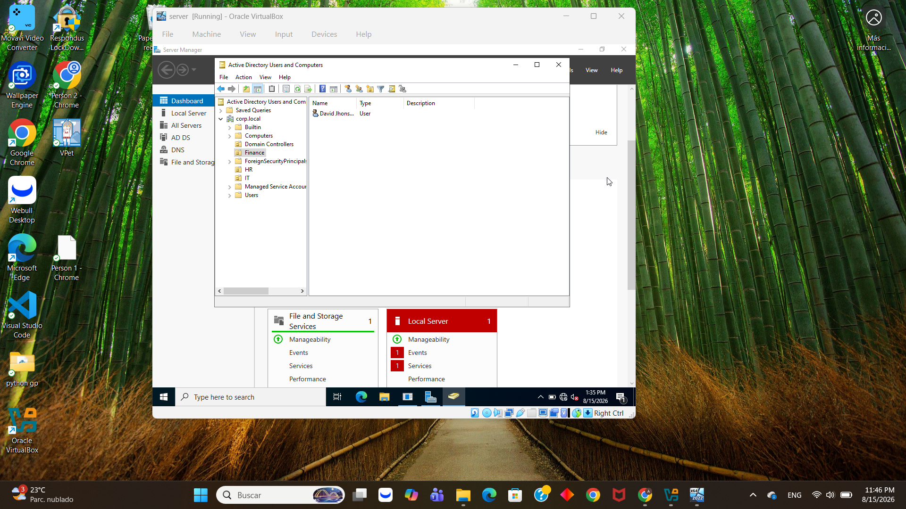
// 07. Creating Security Groups
Once users were created, I set up Security Groups — one per department. The idea is simple: instead of giving each person individual access to folders and resources, you put people in a group and give the group access. When someone leaves the company, you just remove them from the group and they lose access to everything at once. Much cleaner than managing permissions user by user.
// 08. Password Reset and Account Unlock
This is probably the most common helpdesk ticket out there: "I can't log in." Could be a forgotten password, could be a locked account from too many failed attempts. Either way, it's a quick fix in AD.
I right-clicked on John Smith's account and chose Reset Password. The dialog lets you set a new password and unlock the account at the same time — which is usually what you want since locked accounts are often the result of someone trying the wrong password too many times.
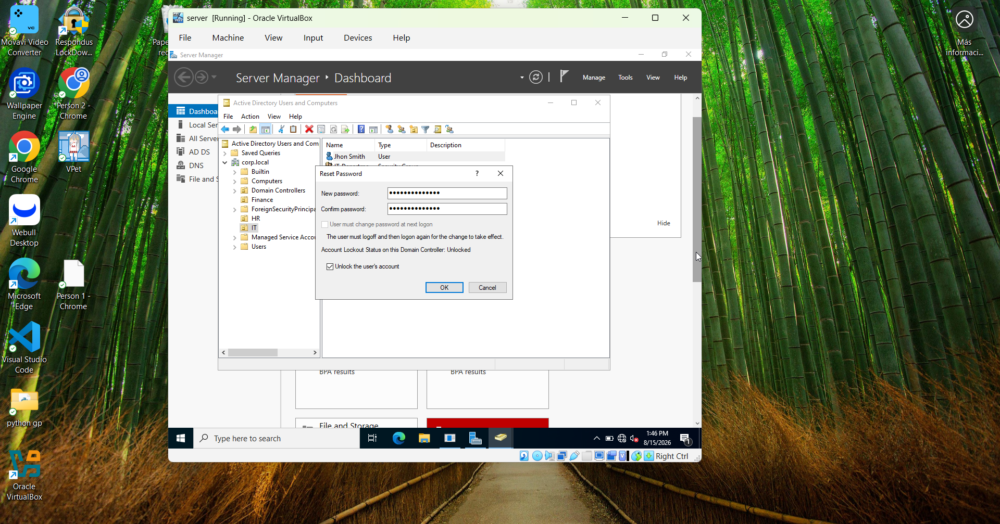
// 09. Shared Folder with Group Permissions
Another classic ticket: "I'm a new employee and I need access to the IT folder." To practice this, I created a folder called Shared_IT on the C: drive and configured it to only be accessible by members of the IT_Department group. No random users, no Everyone — just the group that's supposed to have access.
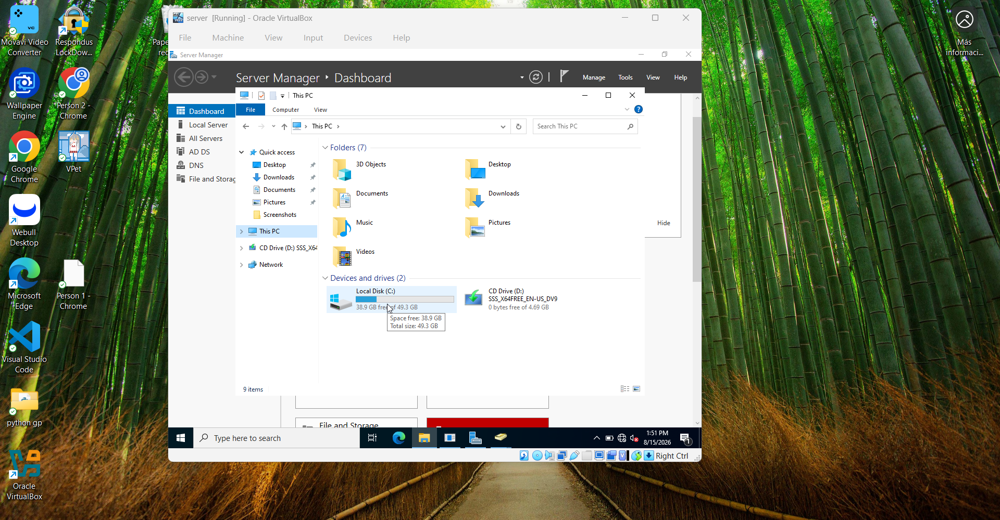
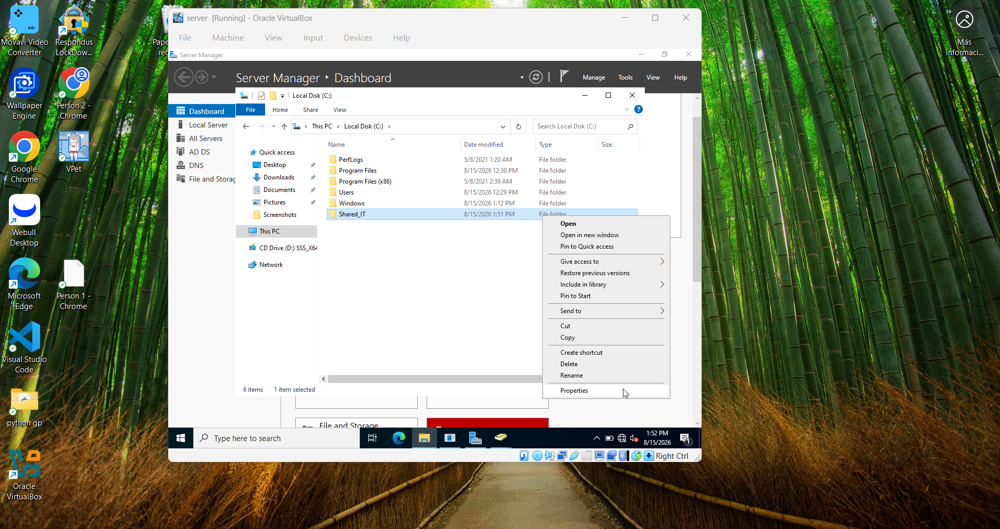
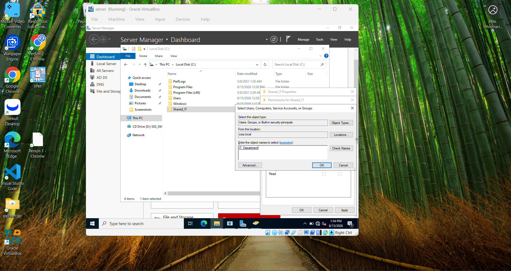
// 10. Verifying Everything with PowerShell
Last step: I opened PowerShell as Administrator and ran Get-SmbShare to confirm the share was actually active. This command lists everything the server is currently sharing over the network — a useful thing to know for auditing or troubleshooting.
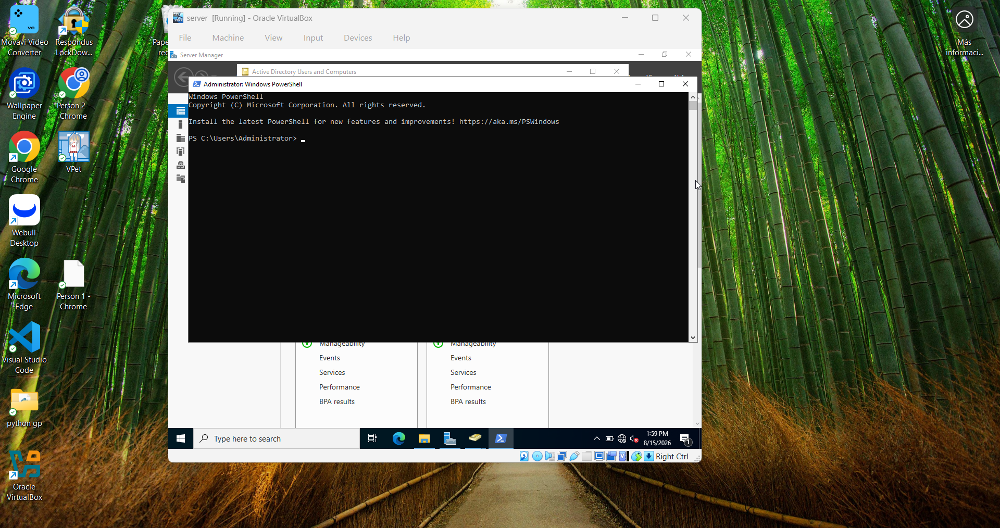
Name Path Description
---- ---- -----------
ADMIN$ C:\Windows Remote Admin
C$ C:\ Default share
IPC$ Remote IPC
NETLOGON C:\Windows\SYSVOL\sysvol\corp.local\... Logon server share
Shared_IT C:\Shared_IT
SYSVOL C:\Windows\SYSVOL\sysvol Logon server share
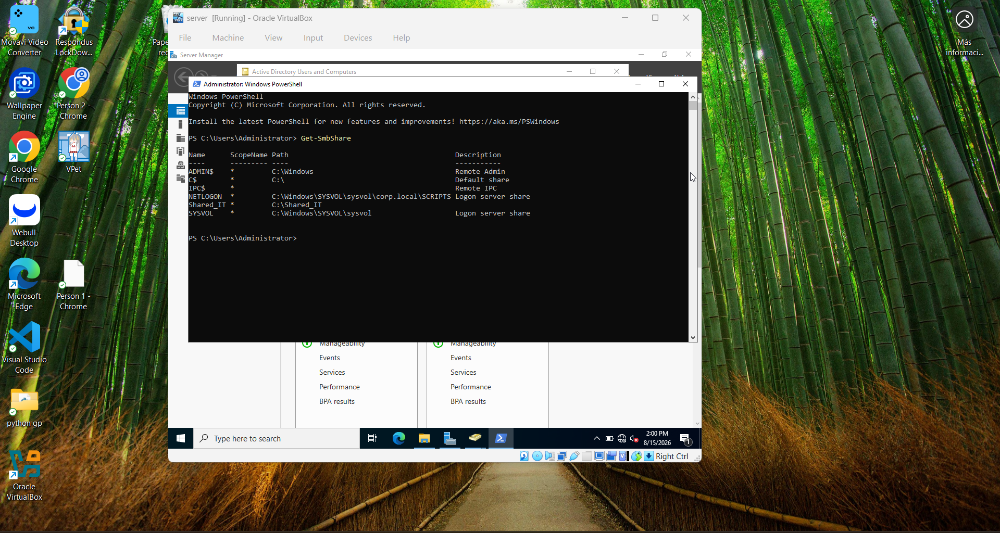
// What I Took Away From This
Going through this lab made a lot of things click that didn't fully make sense when I was just reading about them. A few things stood out:
The DNS setup was probably the most interesting part. Setting the preferred DNS to 127.0.0.1 — pointing the server to itself — felt weird at first, but it makes sense once you understand that the DC is supposed to be the authority for the domain. Everything on the network asks it "where is this computer?" and it answers.
Security groups also made a lot more sense after doing this hands-on. Managing permissions at the group level instead of the user level just scales so much better. One change, and it affects everyone in the group.
And the password reset — honestly, it's the simplest thing, but being able to actually do it in a real AD environment felt different than just reading about it.